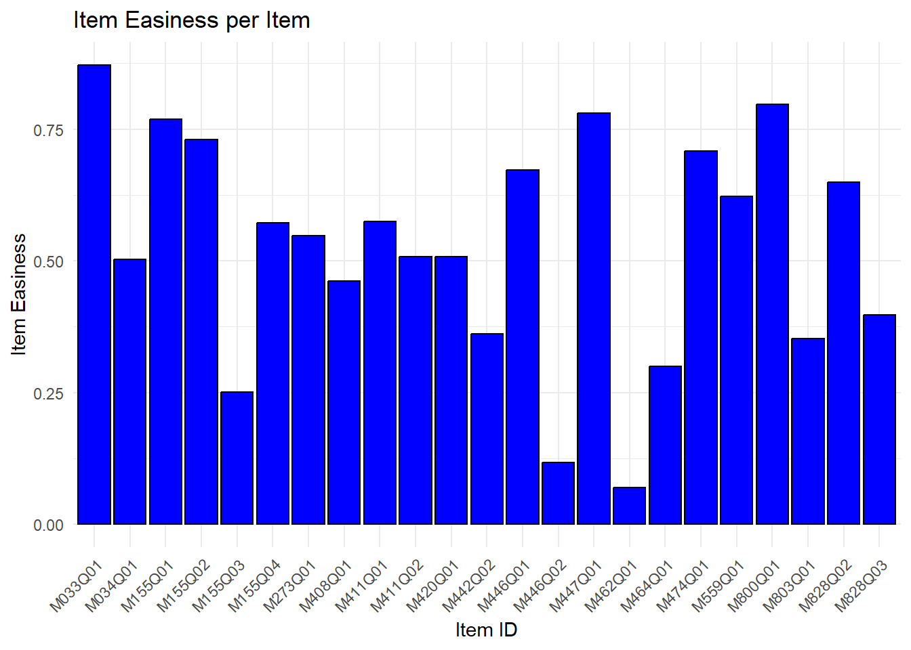

# if (!require("renv")) {
# install.packages("renv", dependencies = TRUE)
# library(renv)
# }
# renv::restore()Reproducible First Analysis of PISA Data
R CODE
R code of a small scale intermediate study to investigate the impact of motivation on the results of students partaking in the PISA test.
This is an intermediary analysis for eventually evaluating the results of the official Dutch report on the PISA results (Meelissen et al. 2023).
Word of thanks:
I would like to thank my supervisors, Remco Feskens and Marieke van Onna for all the input they gave me throughout the making of this research report.
Load Libraries:
If the file does not run (e.g. due to the error message Error in gzfile(file, “rb”) : cannot open the connection ), please delete the first # of each line of the block below instead and try again. You can delete all of them at once by selecting the code, and pressing Ctrl+Shift+C.
if (!require("devtools")) {
install.packages("devtools", dependencies = TRUE)
library(devtools)
}Loading required package: devtoolsWarning: package 'devtools' was built under R version 4.3.3Loading required package: usethisWarning: package 'usethis' was built under R version 4.3.3devtools::install_github("MagicXIV/saveLavaanPlot", force = TRUE)Downloading GitHub repo MagicXIV/saveLavaanPlot@HEADglue (1.7.0 -> 1.8.0 ) [CRAN]
rlang (1.1.3 -> 1.1.4 ) [CRAN]
cli (3.6.2 -> 3.6.3 ) [CRAN]
stringi (1.8.3 -> 1.8.4 ) [CRAN]
fs (1.6.3 -> 1.6.5 ) [CRAN]
cachem (1.0.8 -> 1.1.0 ) [CRAN]
fastmap (1.1.1 -> 1.2.0 ) [CRAN]
digest (0.6.34 -> 0.6.37) [CRAN]
curl (5.2.0 -> 6.1.0 ) [CRAN]Installing 9 packages: glue, rlang, cli, stringi, fs, cachem, fastmap, digest, curlInstalling packages into 'C:/Users/User/AppData/Local/R/win-library/4.3'
(as 'lib' is unspecified)package 'glue' successfully unpacked and MD5 sums checkedWarning: cannot remove prior installation of package 'glue'Warning in file.copy(savedcopy, lib, recursive = TRUE): problem copying
C:\Users\User\AppData\Local\R\win-library\4.3\00LOCK\glue\libs\x64\glue.dll to
C:\Users\User\AppData\Local\R\win-library\4.3\glue\libs\x64\glue.dll:
Permission deniedWarning: restored 'glue'package 'rlang' successfully unpacked and MD5 sums checkedWarning: cannot remove prior installation of package 'rlang'Warning in file.copy(savedcopy, lib, recursive = TRUE): problem copying
C:\Users\User\AppData\Local\R\win-library\4.3\00LOCK\rlang\libs\x64\rlang.dll
to C:\Users\User\AppData\Local\R\win-library\4.3\rlang\libs\x64\rlang.dll:
Permission deniedWarning: restored 'rlang'package 'cli' successfully unpacked and MD5 sums checkedWarning: cannot remove prior installation of package 'cli'Warning in file.copy(savedcopy, lib, recursive = TRUE): problem copying
C:\Users\User\AppData\Local\R\win-library\4.3\00LOCK\cli\libs\x64\cli.dll to
C:\Users\User\AppData\Local\R\win-library\4.3\cli\libs\x64\cli.dll: Permission
deniedWarning: restored 'cli'package 'stringi' successfully unpacked and MD5 sums checkedWarning: cannot remove prior installation of package 'stringi'Warning in file.copy(savedcopy, lib, recursive = TRUE): problem copying
C:\Users\User\AppData\Local\R\win-library\4.3\00LOCK\stringi\libs\x64\stringi.dll
to C:\Users\User\AppData\Local\R\win-library\4.3\stringi\libs\x64\stringi.dll:
Permission deniedWarning: restored 'stringi'package 'fs' successfully unpacked and MD5 sums checkedWarning: cannot remove prior installation of package 'fs'Warning in file.copy(savedcopy, lib, recursive = TRUE): problem copying
C:\Users\User\AppData\Local\R\win-library\4.3\00LOCK\fs\libs\x64\fs.dll to
C:\Users\User\AppData\Local\R\win-library\4.3\fs\libs\x64\fs.dll: Permission
deniedWarning: restored 'fs'package 'cachem' successfully unpacked and MD5 sums checkedWarning: cannot remove prior installation of package 'cachem'Warning in file.copy(savedcopy, lib, recursive = TRUE): problem copying
C:\Users\User\AppData\Local\R\win-library\4.3\00LOCK\cachem\libs\x64\cachem.dll
to C:\Users\User\AppData\Local\R\win-library\4.3\cachem\libs\x64\cachem.dll:
Permission deniedWarning: restored 'cachem'package 'fastmap' successfully unpacked and MD5 sums checkedWarning: cannot remove prior installation of package 'fastmap'Warning in file.copy(savedcopy, lib, recursive = TRUE): problem copying
C:\Users\User\AppData\Local\R\win-library\4.3\00LOCK\fastmap\libs\x64\fastmap.dll
to C:\Users\User\AppData\Local\R\win-library\4.3\fastmap\libs\x64\fastmap.dll:
Permission deniedWarning: restored 'fastmap'package 'digest' successfully unpacked and MD5 sums checkedWarning: cannot remove prior installation of package 'digest'Warning in file.copy(savedcopy, lib, recursive = TRUE): problem copying
C:\Users\User\AppData\Local\R\win-library\4.3\00LOCK\digest\libs\x64\digest.dll
to C:\Users\User\AppData\Local\R\win-library\4.3\digest\libs\x64\digest.dll:
Permission deniedWarning: restored 'digest'package 'curl' successfully unpacked and MD5 sums checkedWarning: cannot remove prior installation of package 'curl'Warning in file.copy(savedcopy, lib, recursive = TRUE): problem copying
C:\Users\User\AppData\Local\R\win-library\4.3\00LOCK\curl\libs\x64\curl.dll to
C:\Users\User\AppData\Local\R\win-library\4.3\curl\libs\x64\curl.dll:
Permission deniedWarning: restored 'curl'
The downloaded binary packages are in
C:\Users\User\AppData\Local\Temp\Rtmp0Q6jfb\downloaded_packages
── R CMD build ─────────────────────────────────────────────────────────────────
* checking for file 'C:\Users\User\AppData\Local\Temp\Rtmp0Q6jfb\remotes33057bc2a48\MagicXIV-saveLavaanPlot-668e150/DESCRIPTION' ... OK
* preparing 'saveLavaanPlot':
* checking DESCRIPTION meta-information ... OK
* checking for LF line-endings in source and make files and shell scripts
* checking for empty or unneeded directories
Omitted 'LazyData' from DESCRIPTION
* building 'saveLavaanPlot_0.2.2.tar.gz'
Installing package into 'C:/Users/User/AppData/Local/R/win-library/4.3'
(as 'lib' is unspecified)library(saveLavaanPlot)
# Package names
packages <- c("tidyverse", "haven", "dplyr", "tidyr", "lavaan", "lavaanPlot", "shiny", "ggplot2")
# Install packages not yet installed
installed_packages <- packages %in% rownames(installed.packages())
if (any(installed_packages == FALSE)) {
install.packages(packages[!installed_packages])
}
# Packages loading
invisible(lapply(packages, library, character.only = TRUE))Warning: package 'tidyverse' was built under R version 4.3.3Warning: package 'tidyr' was built under R version 4.3.3── Attaching core tidyverse packages ──────────────────────── tidyverse 2.0.0 ──
✔ dplyr 1.1.4 ✔ readr 2.1.5
✔ forcats 1.0.0 ✔ stringr 1.5.1
✔ ggplot2 3.4.4 ✔ tibble 3.2.1
✔ lubridate 1.9.3 ✔ tidyr 1.3.1
✔ purrr 1.0.2 ── Conflicts ────────────────────────────────────────── tidyverse_conflicts() ──
✖ dplyr::filter() masks stats::filter()
✖ dplyr::lag() masks stats::lag()
ℹ Use the conflicted package (<http://conflicted.r-lib.org/>) to force all conflicts to become errorsWarning: package 'lavaan' was built under R version 4.3.3This is lavaan 0.6-19
lavaan is FREE software! Please report any bugs.Warning: package 'lavaanPlot' was built under R version 4.3.3Warning: package 'shiny' was built under R version 4.3.3Read in data:
rm(list = ls())
data <- readRDS("../data/pisa18_m.RDS")
data <- data.frame(data)For now, only 1 booklet & 2 countries will be used: The Netherlands and Germany, and booklet 7.
#filter NL AND DE
# unique(data$CNT)
data <- data %>%
filter(CNT == "NLD" | CNT == "DEU")
#filter booklet number 7
# unique(data$BOOKID)
data <- data %>%
filter(BOOKID == 7)Change response time to seconds, instead of milliseconds
data <- data %>%
mutate(response_time = (data$response_time/1000))Make a unique student identifier
data <- data %>%
mutate(person_id = paste(CNTSCHID, CNTSTUID, sep = "_"))Make missing_counts and total_items variables
#see which responses there are
unique(data$response) # -> "No Response" & "Not Reached" [1] Full credit 1 - Full credit 21 - Full credit
[4] 22 - Full credit No credit No Response
[7] 0 - No credit 00 - No credit 02 - No credit
[10] 01 - No credit 11 - Partial credit Not Reached
[13] 23 - Full credit 12 - Partial credit 13 - Partial credit
19 Levels: No credit Full credit Not Reached Not Applicable ... 2 - Full credit#make missing counts per person based on these
missing_counts <- data %>%
group_by(person_id) %>%
summarise(missing_items = sum(response %in% c("No Response", "Not Reached")), .groups = "drop")
#add missing counts to data
data <- data %>%
left_join(missing_counts, by = "person_id")
#add how many questions they had to answer
total_items <- data %>%
group_by(person_id) %>%
summarise(
total_items = n())
data <- data %>%
left_join(total_items, by = "person_id")Descriptive analyses
Looking into NAs
Per country
summary(data$missing_items) Min. 1st Qu. Median Mean 3rd Qu. Max.
0.000 0.000 0.500 1.528 2.000 15.000 boxplot(data$missing_items)
#countries combined
ggplot(data, aes(x = missing_items)) +
geom_histogram(aes(y = ..count.. / 23), binwidth = 1, fill = "blue", color = "black") +
labs(
title = "Distribution of Total Missing Items per Person",
x = "Number of Missing Items",
y = "Frequency"
) +
theme_minimal()Warning: The dot-dot notation (`..count..`) was deprecated in ggplot2 3.4.0.
ℹ Please use `after_stat(count)` instead.
country_labels <- c("DEU" = "Germany", "NLD" = "The Netherlands")
#countries separately
ggplot(data, aes(x = missing_items)) +
geom_histogram(aes(y = ..count.. / 23), binwidth = 1, fill = "blue", color = "black") +
labs(
title = "Distribution of Missing Items per Person by Country",
x = "Number of Missing Items",
y = "Frequency"
) +
facet_wrap(~ CNT, scales = "free_y", labeller = labeller(CNT = country_labels)) +
theme_minimal()
#now in table format
data %>%
group_by(CNT, missing_items) %>%
summarise(frequency = n() / 23, .groups = "drop")# A tibble: 23 × 3
CNT missing_items frequency
<chr+lbl> <int> <dbl>
1 DEU [Germany] 0 81
2 DEU [Germany] 1 42
3 DEU [Germany] 2 23
4 DEU [Germany] 3 12
5 DEU [Germany] 4 15
6 DEU [Germany] 5 11
7 DEU [Germany] 6 11
8 DEU [Germany] 7 5
9 DEU [Germany] 8 2
10 DEU [Germany] 10 3
# ℹ 13 more rowsSave figure: (Please note: this is an optional step, this figure is already present in the results folder)
ggsave(filename = "../results/DistrMissingPerCountry.tif", plot = last_plot(), device = "tiff")Saving 7 x 5 in imagePerform t-test (normally distr. data) and Mann-Whitney U Test / Wilcoxon Rank-Sum Test (medians instead of means -> non-parametric); to see whether there is a significant difference between the 2 countries on their distributions of the missing items.
NL <- subset(data, CNT == "NLD")
DE <- subset(data, CNT == "DEU")
NL <- NL %>%
select(person_id, missing_items) %>%
distinct()
DE <- DE %>%
select(person_id, missing_items) %>%
distinct()
t.test(NL$missing_items, DE$missing_items)
Welch Two Sample t-test
data: NL$missing_items and DE$missing_items
t = -5.3676, df = 347.51, p-value = 1.462e-07
alternative hypothesis: true difference in means is not equal to 0
95 percent confidence interval:
-1.6527068 -0.7663215
sample estimates:
mean of x mean of y
0.8289474 2.0384615 wilcox.test(NL$missing_items, DE$missing_items)
Wilcoxon rank sum test with continuity correction
data: NL$missing_items and DE$missing_items
W = 10910, p-value = 6.939e-08
alternative hypothesis: true location shift is not equal to 0Per item
data <- data %>%
mutate(item_type_open = case_when(
item_type %in% c("Open Response - Computer Scored", "Open Response - Human Coded") ~ "Open Response",
TRUE ~ item_type # Retain original value for other cases
))
data <- data %>%
mutate(item_type_open = case_when(
item_type_open %in% c("Simple Multiple Choice - Computer Scored") ~ "Simple Multiple Choice",
TRUE ~ item_type_open
))
data <- data %>%
mutate(item_type_open = case_when(
item_type_open %in% c("Complex Multiple Choice - Computer Scored") ~ "Complex Multiple Choice",
TRUE ~ item_type_open
))
item_missing_counts <- data %>%
group_by(item_id, item_type_open, cluster_positie, sequence_in_cluster) %>%
summarise(
missing_answers = (sum(response %in% c("No Response", "Not Reached")) / n_distinct(person_id)) * 100,
.groups = "drop"
)
# Arrange based on cluster_positie and sequence_in_cluster and reorder item_id
item_missing_counts <- item_missing_counts %>%
arrange(cluster_positie, sequence_in_cluster) %>%
mutate(item_id = factor(item_id, levels = unique(item_id[order(cluster_positie, sequence_in_cluster)])))
ggplot(item_missing_counts, aes(x = item_id, y = missing_answers, fill = item_type_open)) +
geom_bar(stat = "identity", color = "black") +
labs(
title = "Percentage of Missing Answers per Item",
x = "Item ID",
y = "Percentage of Missing Answers",
fill = "Item Type" # Add legend title for item_type
) +
theme_minimal() +
theme(axis.text.x = element_text(angle = 45, hjust = 1))
Total scores
Amount of questions in this booklet
summary(data %>%
group_by(person_id) %>%
count()) person_id n
Length:360 Min. :23
Class :character 1st Qu.:23
Mode :character Median :23
Mean :23
3rd Qu.:23
Max. :23 Plotting total score distribution
#make total scores
total_scores <- data %>%
group_by(person_id) %>%
summarise(total_score = sum(item_score))
#add to dataset
data <- data %>%
left_join(total_scores, by = "person_id")
ggplot(total_scores, aes(x = total_score)) +
geom_histogram(binwidth = 1, fill = "blue", color = "black") +
labs(title = "Total Score Distribution", x = "Total Score", y = "Frequency")
item_difficulty <- (data %>%
group_by(item_id) %>%
summarise(max_score = max(item_score))) #assuming at least one student received full points on the item
sum(item_difficulty$max_score)[1] 26Maximum score is 26. No one got full points, or even one below full points.
If you want, you can remove the first # of every line and run the code below and play around with the bin-width of this plot, and the previous plot on missing items per person, in a shiny-app:
# ui1 <- fluidPage(
# titlePanel("Interactive Plots"),
# sidebarLayout(
# sidebarPanel(
# selectInput("plot_type", "Choose a Plot:",
# choices = c("Missing Items per Person", "Total Score Distribution")),
# sliderInput("binwidth", "Binwidth:", min = 1, max = 10, value = 2)
# ),
# mainPanel(
# plotOutput("main_plot")
# )
# )
# )
#
# server1 <- function(input, output) {
# output$main_plot <- renderPlot({
# if (input$plot_type == "Missing Items per Person") {
# ggplot(data, aes(x = missing_items)) +
# geom_histogram(binwidth = input$binwidth, fill = "blue", color = "black") +
# labs(title = "Missing Items per Person", x = "Number of Missing Items", y = "Frequency") +
# theme_minimal()
# } else if (input$plot_type == "Total Score Distribution") {
# ggplot(total_scores, aes(x = total_score)) +
# geom_histogram(binwidth = input$binwidth, fill = "blue", color = "black") +
# labs(title = "Total Score Distribution", x = "Total Score", y = "Frequency") +
# theme_minimal()
# }
# })
# }
#
# shinyApp(ui1, server1)Now lets look at how many points were scored on each item.
item_difficulty_scores <- data %>%
group_by(item_id) %>%
summarise(average_score = mean(item_score),
max_score = max(item_score)) %>%
mutate(difficulty = average_score / max_score)
ggplot(item_difficulty_scores, aes(x = item_id, y = difficulty)) +
geom_bar(stat = "identity", fill = "blue", color = "black") +
labs(
title = "Item Easiness per Item",
x = "Item ID",
y = "Item Easiness"
) +
theme_minimal() +
theme(axis.text.x = element_text(angle = 45, hjust = 1))
I wanted to add this difficulty plot to the missings plot per item:
data_temporary <- item_missing_counts %>%
left_join(item_difficulty_scores, by = "item_id")
data_temporary <- data_temporary %>%
arrange(cluster_positie, sequence_in_cluster) %>%
mutate(item_id = factor(item_id, levels = unique(item_id[order(cluster_positie, sequence_in_cluster)])))
data_temporary$item_type_open <- as.factor(data_temporary$item_type_open)
ggplot(data_temporary, aes(x = missing_answers, y = difficulty, color = item_type_open)) +
geom_point(size = 3, alpha = 0.7) +
labs(
title = "Item Easiness vs. Missing Answers",
x = "Missing Answers (%)",
y = "Item Easiness",
color = "Type of Question"
) +
theme_minimal() +
theme(axis.text.x = element_text(angle = 45, hjust = 1))
Save figure: (Please note: this is an optional step, this figure is already present in the results folder)
ggsave(filename = "../results/ItemEasinessVsMissingValues.tif", plot = last_plot(), device = "tiff")Saving 7 x 5 in imageKeep in mind, officially our item easiness is called the item’s difficulty. Therefore, in the code, you see names for variables like difficulty and item_difficulty_scores, however, these are high when an item is easy, so we renamed it for the plots. If an item is very difficult (indicated by low easiness score), we expect the missings to be high (high red bar). This is the general pattern we see. But is this due to people not answering, and thus the average score going down and therefore a high difficulty? Or because the question is difficult, and therefore people don’t answer it? It is of course remarkable that some questions are clearly not favourites. It is of course also fun to see that the very first question in the first cluster is answered so often.
“Quantify” motivation
I’ll make dummy variables where 1 indicates a low motivation. + the EFFORT1 variable
response times
summary(data$response_time) Min. 1st Qu. Median Mean 3rd Qu. Max. NA's
0.628 52.211 80.973 96.110 121.592 667.608 30 #make dummies for if a question was answered with too little (<5sec) or too much (>5min) time
data <- data %>%
mutate(
little_time = ifelse(response_time < 5, 1, 0),
much_time = ifelse(response_time > 300, 1, 0),
)
#see if they're roughly the same size, not one of 5 and the other of 500
data %>%
summarise(
little_time = sum(little_time, na.rm = TRUE),
much_time = sum(much_time, na.rm = TRUE)
) little_time much_time
1 143 141#almost the same (!)
#now aggregate them on person level
total_time_scores <- data %>%
group_by(person_id) %>%
summarise(total_little_time = sum(little_time),
total_much_time = sum(much_time))
data <- data %>%
left_join(total_time_scores, by = "person_id")
data$total_little_time <- as.factor(data$total_little_time)
data$total_much_time <- as.factor(data$total_much_time)Delete people with missing response times
#see how many will be deleted
sum(is.na(data$response_time)) [1] 30#delete them
data <- data %>%
filter(!is.na(response_time))30 people deleted
Structural Equation Modelling (SEM)
Make sure all the variables have the correct format and distributions
#change so that values on EFFORT1 above 10 are an NA like intended
data <- data %>%
mutate(EFFORT1 = ifelse(as.numeric(EFFORT1) > 10, NA, EFFORT1))
#make certain variables factors instead of numerical
data <- data %>%
mutate(across(c(CNTSCHID, CNTSTUID, BOOKID, ST004D01T, ST019AQ01T, ST127Q03TA, IMMIG), as.factor)) #added missing_items so that it won't be standardised
data <- data %>%
mutate(across(c(missing_items, EFFORT1, total_little_time, total_much_time), as.integer)) #added missing_items so that it won't be standardised
#Standardize numerical variables
data <- data %>%
mutate(across(where(is.numeric), ~ scale(.) %>% as.vector()))
#change all character variables to factors
data[sapply(data, is.character)] <- lapply(data[sapply(data, is.character)], as.factor)Divide data up in 2 sets, one for each country
#split data up in 2
NLdata <- data %>%
filter(CNT == "NLD")
DEdata <- data %>%
filter(CNT == "DEU")The SEM model
model <- '
# measurement model
Motivation =~ response_time + total_little_time + total_much_time + EFFORT1 + missing_items
Ability =~ PV1MATH
# regressions
Ability ~ Motivation
# residual correlations
'
NLfit <- sem(model, data = NLdata)
summary(NLfit, fit.measures = TRUE, standardized = TRUE)lavaan 0.6-19 ended normally after 63 iterations
Estimator ML
Optimization method NLMINB
Number of model parameters 12
Used Total
Number of observations 3128 3487
Model Test User Model:
Test statistic 295.586
Degrees of freedom 9
P-value (Chi-square) 0.000
Model Test Baseline Model:
Test statistic 1512.792
Degrees of freedom 15
P-value 0.000
User Model versus Baseline Model:
Comparative Fit Index (CFI) 0.809
Tucker-Lewis Index (TLI) 0.681
Loglikelihood and Information Criteria:
Loglikelihood user model (H0) -22068.341
Loglikelihood unrestricted model (H1) -21920.548
Akaike (AIC) 44160.682
Bayesian (BIC) 44233.260
Sample-size adjusted Bayesian (SABIC) 44195.131
Root Mean Square Error of Approximation:
RMSEA 0.101
90 Percent confidence interval - lower 0.091
90 Percent confidence interval - upper 0.111
P-value H_0: RMSEA <= 0.050 0.000
P-value H_0: RMSEA >= 0.080 1.000
Standardized Root Mean Square Residual:
SRMR 0.059
Parameter Estimates:
Standard errors Standard
Information Expected
Information saturated (h1) model Structured
Latent Variables:
Estimate Std.Err z-value P(>|z|) Std.lv Std.all
Motivation =~
response_time 1.000 0.290 0.308
total_littl_tm -0.199 0.069 -2.873 0.004 -0.058 -0.065
total_much_tim 0.880 0.086 10.249 0.000 0.255 0.313
EFFORT1 0.893 0.091 9.800 0.000 0.259 0.288
missing_items -1.168 0.092 -12.761 0.000 -0.338 -0.609
Ability =~
PV1MATH 1.000 0.831 1.000
Regressions:
Estimate Std.Err z-value P(>|z|) Std.lv Std.all
Ability ~
Motivation 2.038 0.164 12.459 0.000 0.710 0.710
Variances:
Estimate Std.Err z-value P(>|z|) Std.lv Std.all
.response_time 0.799 0.021 37.301 0.000 0.799 0.905
.total_littl_tm 0.791 0.020 39.461 0.000 0.791 0.996
.total_much_tim 0.598 0.016 37.223 0.000 0.598 0.902
.EFFORT1 0.741 0.020 37.623 0.000 0.741 0.917
.missing_items 0.193 0.008 23.612 0.000 0.193 0.629
.PV1MATH 0.000 0.000 0.000
Motivation 0.084 0.012 7.064 0.000 1.000 1.000
.Ability 0.342 0.021 15.925 0.000 0.496 0.496lavInspect(NLfit)$lambda
Motvtn Abilty
response_time 0 0
total_little_time 1 0
total_much_time 2 0
EFFORT1 3 0
missing_items 4 0
PV1MATH 0 0
$theta
rspns_ ttl_l_ ttl_m_ EFFORT mssng_ PV1MAT
response_time 6
total_little_time 0 7
total_much_time 0 0 8
EFFORT1 0 0 0 9
missing_items 0 0 0 0 10
PV1MATH 0 0 0 0 0 0
$psi
Motvtn Abilty
Motivation 11
Ability 0 12
$beta
Motvtn Abilty
Motivation 0 0
Ability 5 0DEfit <- sem(model, data = DEdata)Warning: lavaan->lav_object_post_check():
some estimated ov variances are negativesummary(DEfit, fit.measures = TRUE, standardized = TRUE)lavaan 0.6-19 ended normally after 83 iterations
Estimator ML
Optimization method NLMINB
Number of model parameters 12
Used Total
Number of observations 4232 4763
Model Test User Model:
Test statistic 552.369
Degrees of freedom 9
P-value (Chi-square) 0.000
Model Test Baseline Model:
Test statistic 3680.699
Degrees of freedom 15
P-value 0.000
User Model versus Baseline Model:
Comparative Fit Index (CFI) 0.852
Tucker-Lewis Index (TLI) 0.753
Loglikelihood and Information Criteria:
Loglikelihood user model (H0) -36079.255
Loglikelihood unrestricted model (H1) -35803.070
Akaike (AIC) 72182.510
Bayesian (BIC) 72258.715
Sample-size adjusted Bayesian (SABIC) 72220.584
Root Mean Square Error of Approximation:
RMSEA 0.119
90 Percent confidence interval - lower 0.111
90 Percent confidence interval - upper 0.128
P-value H_0: RMSEA <= 0.050 0.000
P-value H_0: RMSEA >= 0.080 1.000
Standardized Root Mean Square Residual:
SRMR 0.073
Parameter Estimates:
Standard errors Standard
Information Expected
Information saturated (h1) model Structured
Latent Variables:
Estimate Std.Err z-value P(>|z|) Std.lv Std.all
Motivation =~
response_time 1.000 0.125 0.124
total_littl_tm -3.941 0.473 -8.334 0.000 -0.494 -0.454
total_much_tim 1.152 0.184 6.264 0.000 0.144 0.132
EFFORT1 1.995 0.262 7.616 0.000 0.250 0.234
missing_items -8.854 1.086 -8.150 0.000 -1.110 -1.052
Ability =~
PV1MATH 1.000 1.078 1.000
Regressions:
Estimate Std.Err z-value P(>|z|) Std.lv Std.all
Ability ~
Motivation 4.597 0.546 8.418 0.000 0.535 0.535
Variances:
Estimate Std.Err z-value P(>|z|) Std.lv Std.all
.response_time 1.007 0.022 46.053 0.000 1.007 0.985
.total_littl_tm 0.942 0.022 42.499 0.000 0.942 0.794
.total_much_tim 1.172 0.025 46.058 0.000 1.172 0.983
.EFFORT1 1.080 0.023 45.995 0.000 1.080 0.945
.missing_items -0.118 0.044 -2.654 0.008 -0.118 -0.106
.PV1MATH 0.000 0.000 0.000
Motivation 0.016 0.004 4.207 0.000 1.000 1.000
.Ability 0.830 0.022 38.530 0.000 0.714 0.714lavInspect(DEfit)$lambda
Motvtn Abilty
response_time 0 0
total_little_time 1 0
total_much_time 2 0
EFFORT1 3 0
missing_items 4 0
PV1MATH 0 0
$theta
rspns_ ttl_l_ ttl_m_ EFFORT mssng_ PV1MAT
response_time 6
total_little_time 0 7
total_much_time 0 0 8
EFFORT1 0 0 0 9
missing_items 0 0 0 0 10
PV1MATH 0 0 0 0 0 0
$psi
Motvtn Abilty
Motivation 11
Ability 0 12
$beta
Motvtn Abilty
Motivation 0 0
Ability 5 0library(saveLavaanPlot)
unlink("~/.cache/htmlwidgets", recursive = TRUE)
#If the lines of code below result in errors, please run them in the console.
saveLavaanPlot::saveLavaanPlot(NLfit, "../results/SEMModelNL.png")Generating SEM plot...
File saved to: C:\Users\User\hoi\Backup\Hoi\Uni Stuff\Master\Jaar 2\Markup Languages\Final_Assignment_Markup\MarkupCourseJasmijn\01_research_compendium\results\SEMModelNL.png saveLavaanPlot::saveLavaanPlot(DEfit, "../results/SEMModelDE.png")Generating SEM plot...
File saved to: C:\Users\User\hoi\Backup\Hoi\Uni Stuff\Master\Jaar 2\Markup Languages\Final_Assignment_Markup\MarkupCourseJasmijn\01_research_compendium\results\SEMModelDE.png saveLavaanPlot::saveLavaanPlot(NLfit, "../results/EmptySEMModel.png", coefs = FALSE, stand = FALSE, stars = FALSE)Generating SEM plot...
File saved to: C:\Users\User\hoi\Backup\Hoi\Uni Stuff\Master\Jaar 2\Markup Languages\Final_Assignment_Markup\MarkupCourseJasmijn\01_research_compendium\results\EmptySEMModel.png If the last 3 lines of code result in errors, please run them in the console.
This is the end of the R code!
Meelissen, Martina, Nathalie Maassen, Joyce Gubbels, Annemarie van Langen, Jolien Valk, Christel Dood, Isis Derks, Melissa In’t Zandt, and Maarten Wolbers. 2023. “Resultaten PISA-2022 in Vogelvlucht.”